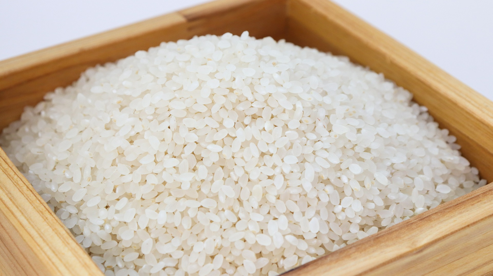
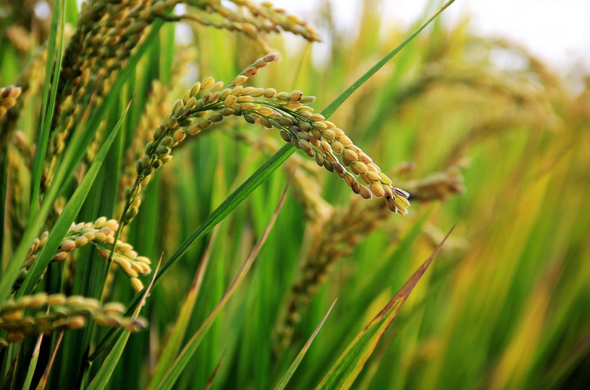
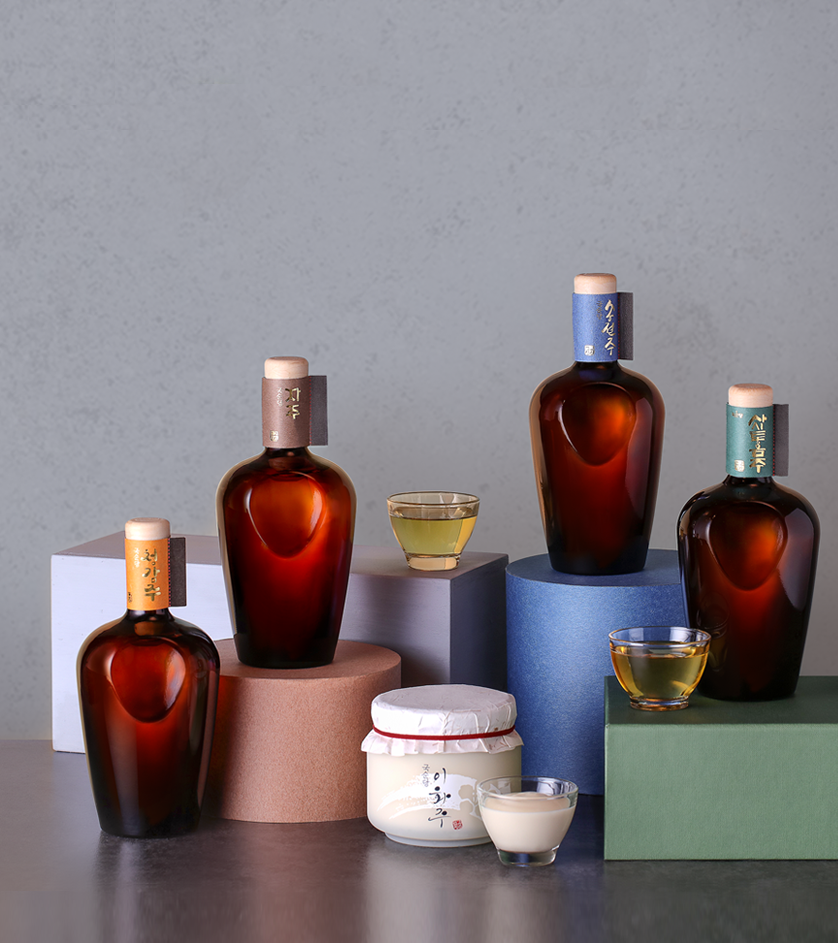
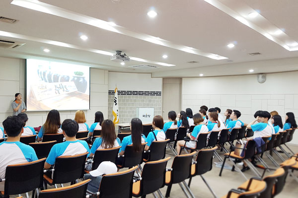

옛 술에 기원을 두어 고유한 속성을 간직하고, 시대에 맞게
계승 발전되어 오면서 다른 나라와의 차별성이 뚜렷하며,
우리 민족의 혼과 생명력을 담고 있는 술
국순당 술의 특징
국순당은 국내 최초 양조전용 쌀인 설갱미를 개발하여
전통의 우수한 생쌀발효법으로 술을 빚습니다.

생쌀발효법이란?
술이 만들어질 때까지 높은 열을 가열하지 않고,
가루 낸 생쌀과 상온의 물을 그대로 사용하여 빚는 방법입니다.
국순당은 전통의 우수한 생쌀발효법을 사용하여 술을 빚고 있습니다.

설갱미란?
설갱미는 술을 빚기위한 최적의 쌀입니다.
우리술의 뛰어난 품질과 영양성분 등 기능적 부분의 향상, 잡맛을 없애고 깔끔한 맛을 강화하여 고객에게 좋은 술을 제공하고자
양조용 쌀을 개발하는데 노력하게 되었습니다.
농가와의 약속재배
농가와의 설갱미 약속재배를 통해서 국순당과 농민이 상생하고 있습니다.
약속재배를 통해 설갱미를 재배함으로써, 국순당은 좋은 원료의 확보로
품질 좋은 제품을 생산하고, 농가는 안정된 수익을 기대할 수 있습니다. 국순당과 재배농가의 약속재배 방식을 기업과 농민이 상생하는 역할모델로
만들어가고자 이를 시행하였습니다.
조선시대에 유명했던 술은 무려 3백여 가지에 이르나
그 중에서도 백하주, 심해주, 이화주,
청감주, 부의주, 등의 春酒類를 들 수 있습니다.
유명한 소주로 감홍로, 죽력고,
이강고 등이 있고 조선후기에 들어서는
合酒類와 過夏酒類가 출현하여
탁주, 약주, 소주 외에
혼양주가 덧붙여지게 되었습니다.
우리술 복원사업
잊혀져 가는 우리술을 되살립니다
국순당은 1992년 백세주 복원을 통해 예전
우리술의 가치가 지금의 소비자에게
사랑받을 수 있다는 경험을 하였고,
2008년부터 본격적으로 일제강점기 등을
거치면서 잊혀진 우리의 전통주를 복원해
국순당의 백세주 마을을 통해 선보이는
우리 술 복원사업을 진행하고 있습니다.

우리술을 바르게 알고 즐기는 방법
우리술 아름터
국순당에서는 아름다운 우리술의
복원과 함께 우리술 문화를 전파하기 위하여
우리술 아카데미를 준비 중에 있습니다.
우리술을 바르게 알고 바르게 즐기는 방법
우리술 아름터가 알려드립니다!